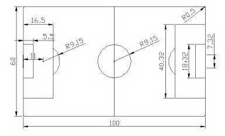

Ejercicio de evaluación 1
Dibuja el plano de planta del terreno de juego de un campo de fútbol como el que se indica en la figura adjunta.
No tienes que indicar las acotaciones que aparecen en él, pero si te atreves a hacerlo, el procedimiento es muy sencillo:
- Activa la barra de herramientas Acotaciones.
- Haz clic sobre Cota lineal o sobre Cota angular, según sea necesario.
NOTA:
Se valorará adicionalmente el hecho de que alguien sea capaz de añadir a este plano algunos extras como:
- Pista de atletismo (con las medidas adecuadas ® busca información en Internet o en enciclopedias).
- Graderío.
